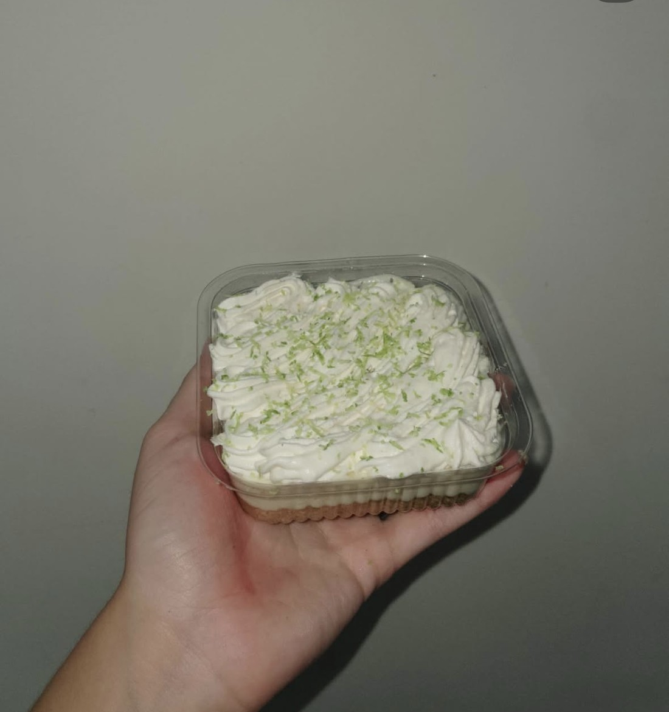
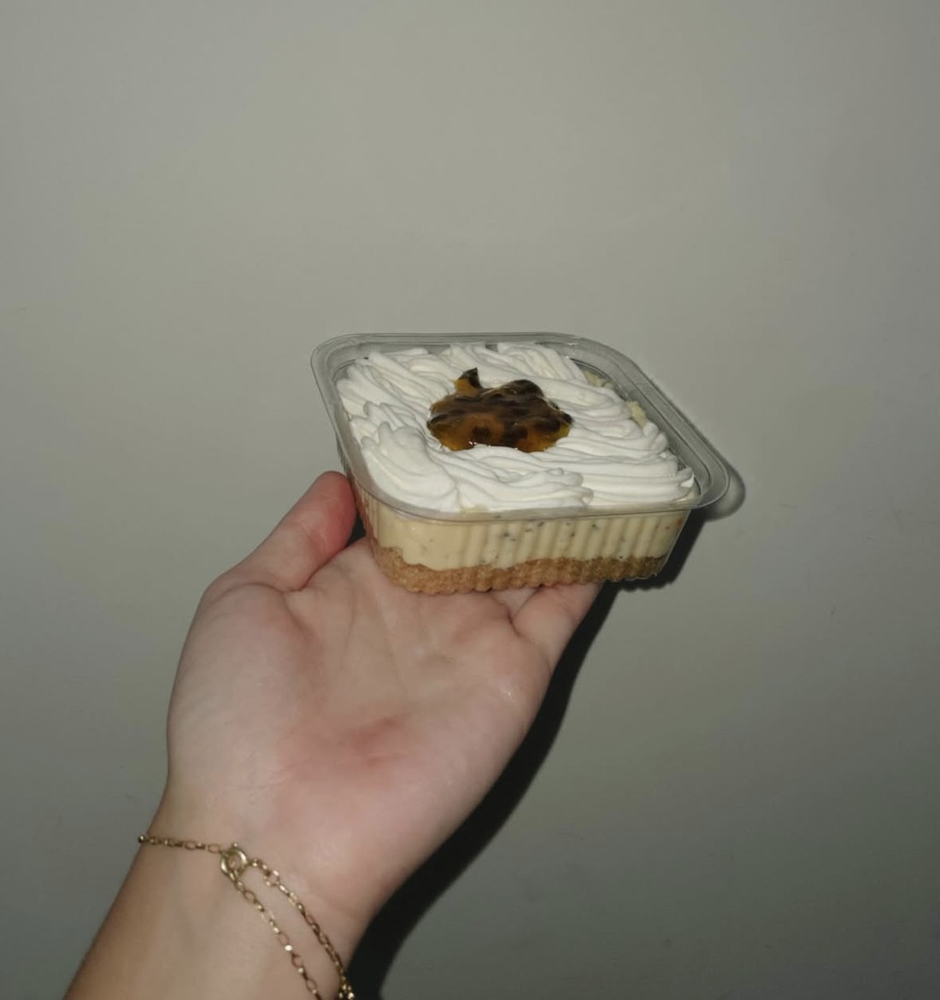
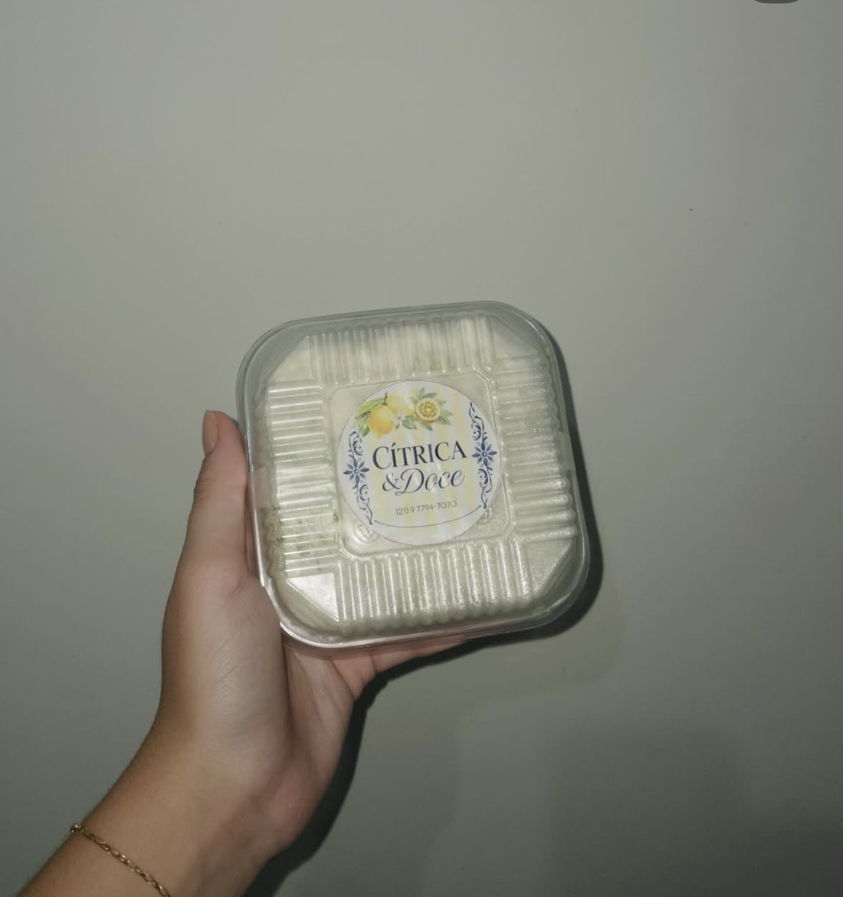
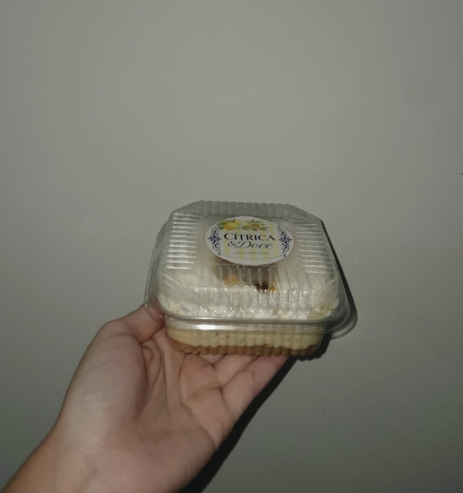

Cítrica & Doce
O ponto exato entre o doce e o cítrico.
Tortas artesanais de limão e maracujá, feitas para serem lembradas.
O equilíbrio perfeito
entre o doce
e o cítrico.
Duas tortas. Uma só ideia.

Torta de
Limão
Cremosa e fresca, com o cítrico do limão equilibrando cada camada. A base amanteigada segura um recheio delicado, finalizado com chantilly e raspas na medida certa.
Pedir Torta de LimãoDoce por fora.
Cítrico por dentro.

Torta de
Maracujá
Cremosa e marcante, com o azedinho do maracujá suavizado no ponto certo. Uma calda generosa corta o doce do chantilly e devolve o equilíbrio a cada colherada.
Pedir Torta de Maracujá

Cada torta sai embalada com cuidado, pronta para chegar até você do jeitinho que saiu da nossa cozinha.
DIVINAAAA, simplesmente um sabor leve, mas deliciosoooo, eu sou apaixonadaaaa
Rebeca
Tudo! O potinho deveria ser de comer também
Monick
ela todaaa, é perfeita em cada detalhe
Jennifer
As tortinhas são deliciosas, perfeitas o sabor delas é incrível, a minha favorita é a de maracujá, uma delícia, pra mim tá perfeito nem precisa mudar nem nada, super deliciosa as duas.
Flávia
Estava maravilhosa de verdade, eu amei, estava no ponto certo até porque tem vezes que eu como mousse de maracujá e esta muito doce e eu enjoo mas o seu estava no ponto maravilhoso.
Dhiovanna
Por trás da Cítrica & Doce
@bylivmaia